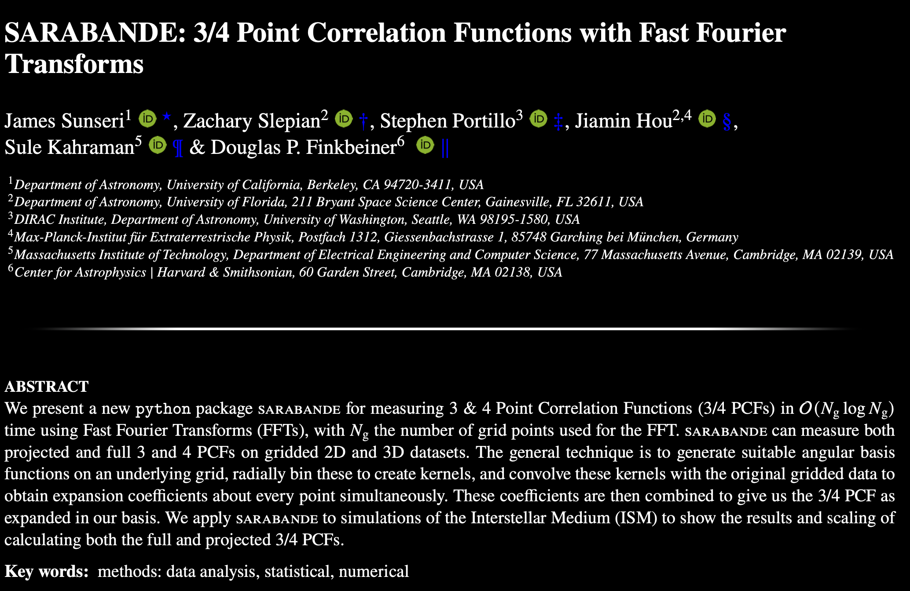

SARABANDE is my first publically available python package. The package enables users to measure high order statistics on grid mesh datasets. The algorithms used in this package harness the power of the Fast Fourier Transform algorithm to measure these statistics much faster than naive algorithms. For more details, consult our paper on ArXiv: CLICK HERE

This project started in my Summer REU program at the University of Florida where I succesfully wrote an algorithm to
measure the Four-Point Correlation Function (4PCF) on discretized data with O(N log N) complexity.
This allgorithm allows us to probe deeper into the simulations of the turbulent interstellar
medium to learn more about the nature of turbulence and magnetic fields.
Below is a link to my REU Presentation on the 4PCF algorithm I wrote: